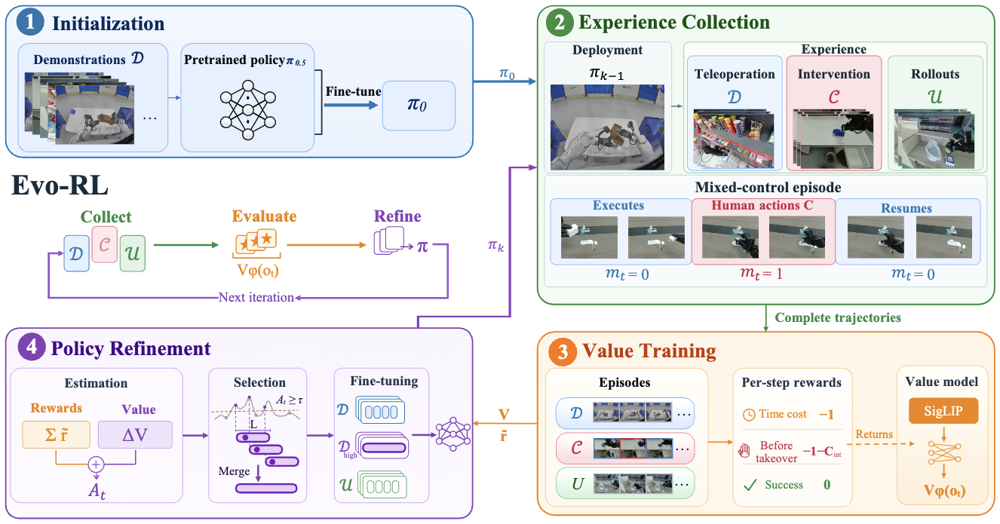
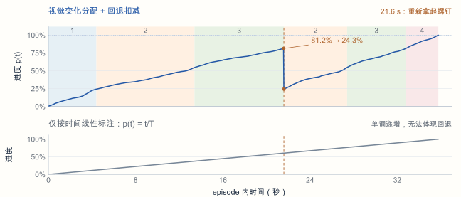

介入时机与介入动作的自动化
EVO-RL 通过人工介入补充纠正经验，利用优势估计筛选高价值数据，迭代更新机器人策略。
在这一过程中，介入时机的判断和纠正动作的提供仍依赖人工。
何时介入？
人工观察执行过程，判断机器人是否需要接管。
如何恢复？
人工接管并执行纠正动作，帮助机器人继续完成任务。

减少人工干预与接管，自动产生数据，基于优势值筛选有价值的片段，迭代训练策略。
EVO-RL 通过人工介入补充纠正经验，利用优势估计筛选高价值数据，迭代更新机器人策略。
在这一过程中，介入时机的判断和纠正动作的提供仍依赖人工。
人工观察执行过程，判断机器人是否需要接管。
人工接管并执行纠正动作，帮助机器人继续完成任务。

减少人工干预与接管，自动产生数据，基于优势值筛选有价值的片段，迭代训练策略。
仅按时间线性标注会得到单调递增的曲线；视觉变化分配 + 回退扣减可保留任务回退。
φₜ 为当前帧的视觉编码。
按变化量分配段内贡献；同一子任务以末次成功段的总变化量设定预算。
需重做的步骤重新出现时，扣回已有贡献。
Δcₜ：当前帧贡献；Rₜ：需重做步骤的已有贡献。Cₜ：累计贡献；C_T：最终累计值。

四阶段：1 套筒 · 2 螺钉 · 3 对齐并插入 · 4 入盒（对齐与插入合并）
保留“已完成 → 需重做”的状态变化，让进度标签能够回退。
对视频标注子任务、执行顺序与时间边界，形成状态与进度监督所需的分段信息。
| 子任务 | nowid | finishid* | restid | 5 FPS 时间 / s | 30 FPS 原帧 |
|---|---|---|---|---|---|
| 拿起螺钉 | 2 | ∅ | 1,3,4 | 25.2–30.0 | 756–905 |
| 拿起套筒 | 1 | 2 | 3,4 | 30.2–32.4 | 906–977 |
| 将螺钉和套筒对齐并插入 | 3 | 1,2 | 4 | 32.6–37.2 | 978–1121 |
| 将装配好的组件放入盒子 | 4 | 1,2,3 | ∅ | 37.4–39.4 | 1122–1187 |
为逐帧状态监督与连续进度计算提供子任务边界。


 左腕
左腕


 右腕
右腕


<prompt>当前任务是装配螺栓</prompt><description>任务一共有四个阶段：拿起套筒、拿起螺钉、将螺钉和套筒对齐并插入、将装配好的组件放入盒子。</description><nowstage>拿起螺钉</nowstage><finishstage>拿起套筒</finishstage><reststage>对齐并插入、组件入盒</reststage><nextstage>对齐并插入</nextstage>
思维链输出意图、阶段，并包含逐帧进度：
<progress>0.5, 0.6, 0.7, 0.8, 0.9, 0.92</progress>
部署：逐 Token 解码，再读取进度
思维链仅作辅助训练，不含进度真值。
L = 0.7 L思维链 + 0.3 L进度
部署：一次前向，无需解码思维链
<intention>当前正在进行的任务是插螺栓</intention>
<nowstage>对齐并插入</nowstage><finishstage>拿起螺钉、拿起套筒</finishstage><reststage>组件入盒</reststage><nextstage>组件入盒</nextstage>
<progress>0.5, 0.6, 0.7, 0.8, 0.9, 0.92</progress>
已有 Qwen3.5-2B 检查点 · epoch-04 · 验证集逐帧闭环评估
file-020 · episode 5MAE 5.54 个百分点

file-010 · episode 3MAE 11.34 个百分点

结合任务进度、阶段状态与实际意图，判断当前执行是否偏离任务要求。
持续执行任务相关动作，
但长时间没有有效进展。
观察信号pₜ 长时间
无有效增长
对齐前反复小范围抖动。
正在执行的阶段，
其前置任务尚未完成。
观察信号实际阶段 nowid
与 expect-set 不一致
未开箱就尝试放入物品。
实际执行的目标，
偏离任务指令的要求。
观察信号预测意图
与任务 prompt 不匹配
要求拿杯子，却在叠衣服。
停滞结合历史判断，时序与意图结合任务要求判断。